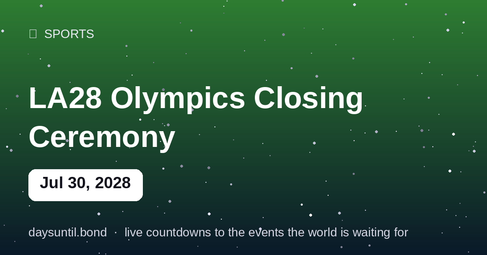

When Is the LA28 Olympic Closing Ceremony?
LA28 Olympics Closing Ceremony falls on Monday, July 31, 2028.
As of November 23, 2026: 616 days to go — 88 weeks and 0 days, 440 weekdays (176 weekend days), about 14,784 hours.

Quick facts
| Date | Sunday, July 30, 2028 |
|---|---|
| Start time | 6:00 p.m. Pacific / 9:00 p.m. Eastern |
| Venue | LA Memorial Coliseum, Los Angeles |
| Schedule status | Officially published; subject to change |
About LA28 Olympics Closing Ceremony
The LA28 Olympic Closing Ceremony is scheduled for Sunday, July 30, 2028 at 6:00 p.m. Pacific (9:00 p.m. Eastern) at the LA Memorial Coliseum. The official schedule is subject to change.
The timer counts to the published ceremony start time, converted from Pacific Time to UTC. Your local clock may show July 31 in time zones east of the Americas.
When is the LA28 Olympic Closing Ceremony?
The LA28 Olympic Closing Ceremony is scheduled for Sunday, July 30, 2028. The official LA28 competition schedule lists the ceremony for 6:00 p.m. Pacific Time at the LA Memorial Coliseum (9:00 p.m. Eastern).
The official LA28 competition schedule identifies the ceremony as Day 16 of the Games. LA28 notes that the schedule can change, so check the official site again closer to the event.
What happens at the Olympic Closing Ceremony?
The Closing Ceremony marks the end of the Olympic Games. Athletes gather for the final celebration, the Olympic flag is handed to the next host city, and the Olympic Flame is extinguished. It is the formal closing moment after the final competition sessions.
The LA28 ceremony is planned for the LA Memorial Coliseum, a venue with a long Olympic history. The official schedule places the final day of competition and the Closing Ceremony on July 30.
Do not confuse the Olympic and Paralympic closing ceremonies
LA28 hosts both the Olympic and Paralympic Games, and their closing dates are different. The Olympic Closing Ceremony is scheduled for July 30, 2028. The Paralympic Games run from August 15 to August 27, with their own Closing Ceremony on August 27.
The official LA28 Games dates announcement lists the two event periods separately. This countdown is specifically for the Olympic Closing Ceremony, not the Paralympic finale.
What time is 6 p.m. Pacific in other time zones?
The published start time is 6:00 p.m. Pacific Daylight Time in Los Angeles on July 30, 2028. That is 9:00 p.m. Eastern on July 30 and 01:00 UTC on July 31. In many European and African time zones, the local calendar date will therefore be July 31.
The countdown uses the official Pacific start instant and converts it for your device's time zone. This avoids treating the ceremony as if it began at midnight in every country.
How to follow schedule changes
Competition timetables and ceremony details can be revised as the Games approach. Use the LA28 schedule announcement as the primary reference and check local broadcasters for coverage times.
This page is a countdown to the currently published start time. It does not provide ticket availability, broadcast rights or a guarantee that every broadcast begins at the same local time.
Your LA28 Olympics Closing Ceremony countdown milestones
It is easier to plan against fixed points than against a number that moves. These are the dates on which the countdown to LA28 Olympics Closing Ceremony passes each marker between now and the day itself — the last one falls on Sunday 30 July, when there will be 1 day left.
| Milestone | Day | Date | Remaining |
|---|---|---|---|
| 365 days | Sunday | 01 August 2027 | 365 days to go |
| 200 days | Thursday | 13 January 2028 | 200 days to go |
| 100 days | Saturday | 22 April 2028 | 100 days to go |
| 50 days | Sunday | 11 June 2028 | 50 days to go |
| 30 days | Saturday | 01 July 2028 | 30 days to go |
| 14 days | Monday | 17 July 2028 | 14 days to go |
| 7 days | Monday | 24 July 2028 | 7 days to go |
| 3 days | Friday | 28 July 2028 | 3 days to go |
| 1 days | Sunday | 30 July 2028 | 1 day to go |
How the remaining time breaks down
616 days is the headline, but it is rarely the number that helps. 440 of those are weekdays and 176 fall on a weekend, which is the split that matters if you are planning around work. It is 88 weeks and 0 days, or roughly 20.2 months, or about 14,784 hours.
| Unit | Until LA28 Olympics Closing Ceremony |
|---|---|
| Days | 616 |
| Weeks | 88 weeks and 0 days |
| Months (approx) | 20.2 |
| Weekdays | 440 |
| Weekend days | 176 |
| Hours | 14,784 |
| Sleeps | 616 |
Working days are Monday to Friday and do not subtract public holidays, which vary by country and employer — the full month-by-month split is on our weekday page for LA28 Olympics Closing Ceremony.